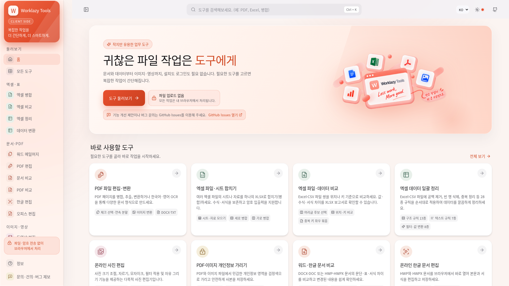
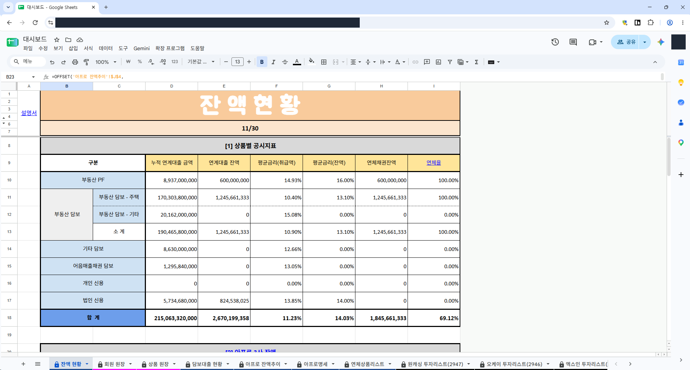

01 / 문서 · 엑셀 · PDF
문서·엑셀
자동화
파일을 합치고, 변경 내용을 비교하고,
양식 문서를 한 번에 만듭니다.
작업 사례 · Worklazy Tools, Word Compare, ExcelMerger
자동화 사례 보기worklazy.net

Worklazy Tools브라우저에서 쓰는 업무 도구
01 / 문서 · 엑셀 · PDF
파일을 합치고, 변경 내용을 비교하고,
양식 문서를 한 번에 만듭니다.
작업 사례 · Worklazy Tools, Word Compare, ExcelMerger
자동화 사례 보기
02 / 수집 · 검색 · 대시보드
자료를 모아 검색·통계·지도로 만듭니다.
실무에 맞는 조회 화면을 구성합니다.
작업 사례 · 안전신문고, 커뮤니티 지도, 실무 대시보드
대시보드 사례 보기
개인정보를 가린 실제 업무 화면03 / 문서 판독 · 데이터 검증
공시·문서에서 필요한 값을 뽑습니다.
기준일과 원문 근거를 함께 남깁니다.
작업 사례 · FolioTrace, Market Calendar
문서 처리 사례 보기본문 · 첨부자료 · 정정 공시
주식수 · 지분율 · 기준일
원문 근거 · 미확인 항목 구분
04 / 앱 · 웹 · 외부 API
앱·웹·크롬 확장을 연결합니다.
외부 API를 작업 화면에 붙입니다.
작업 사례 · 안전신문고 연동 서비스, MyTradingDesk
연동 사례 보기

문서·엑셀 자동화 / 설치형 도구의 웹 전환
↗02안전신문고 연동 서비스데이터 수집·시각화 / 앱·지도·크롬 확장
↗03실무 대시보드엑셀·스프레드시트 / 조회·집계·검증
↗04FolioTrace · Market Calendar문서 판독 / 데이터 정리·검증
↗05MyTradingDesk · peti외부 API 연동 / 파일 변환
↗